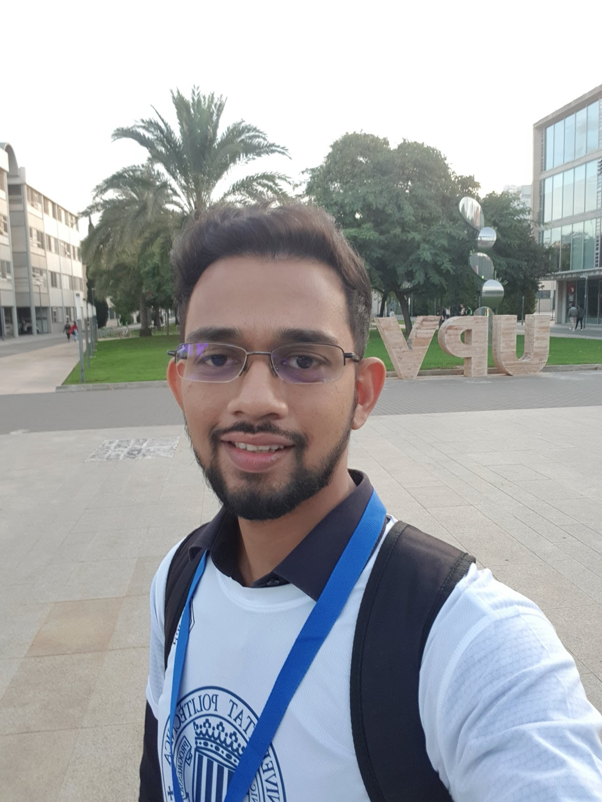

|
Chanuka Algama I'm a Researcher at LIRNEasia, a leading think tank active across Asia-Pacific region, where I work with the Data, Algorithms and Policy team. I hold a BSc (Honours) in Computer Science from the University of Kelaniya. One of my work was recently recognized when I won 2nd place at the IEEE’s Standards for Secure and Trusted Learning Systems competition which held in Valencia, Spain. |
 |
{kind=link}
ResearchI'm interested in computer vision, deep learning, generative AI, and image processing. My research primarily focuses on interpreting aspects of the physical world—such as shape, motion, color, and light—from images, often through the use of radiance fields. Some papers are highlighted. |


|
Robust Optical Flow calculation: A higher order differential approach
Kasun Amarasinghe Under review at VISAPP, 2025
Primary Focus: Solutions for the challenge of optimal correspondence calculation under conditions of substantial nonlinear motion patterns and vulnerability of the flow constraint to rapid spatial transformations.
|
|
Under construction |